Frame0 · 0.000s · 4.5/5

Frame0 at0.000s: Intact opening: both mittens hold outer sheet corners and the red oval is exposed. Individual reference-canvas opinion only; no whole-action or current-game acceptance.
Current in-game wrapping2.8/5; earlier unbound in-game contact study4.1/5. New A1 complete local take2.4/5 rejected: corners lift, but the sweet is never wrapped. New source A11 provides an alternate far-edge grip; its requested near-edge role failed. A2 far-edge fold1.8 is rejected: all41 frames leave the sweet exposed. A12 grip4.3 is rejected; A13 partial fold4.5 is source-only. A3 far-fold1.5 and A4 far-fold0.8 fail with extra hands and body distortion. No completed closure or release. Complete neck grip, opposing twist, release and runtime acceptance remain open.
164 complete native frames currently reviewed, 40 individual component evaluations. All783 current production members preserved. Device, child, owner, ordinary runtime/input/interruption and full-job acceptance remain open.
Previous actual contact study · Whole job artwork library · Previous immutable W remote verification · This task contract

Complete existing authored cell; source4.5 is not a motion pass.
Exact RGBA pixel equality
Requested near-edge role4.0 rejected. Alternate far-edge source4.5 provisional, inclusive priority. The complete returned native is preserved.
Source review and exact ImageGen prompt
Complete generated native directly inspected. Whole source4.3 remains weak. Native is unbound/NPOT and not a temporal frame or current-game pass.
Every source opinion and prompt
Complete original native directly inspected. Useful partial-fold pose reaches source-only drafting floor4.5 and remains an inclusive priority. Exact requested coverage4.2 is not met. No source-to-motion/runtime/owner acceptance transfer.
Every source opinion and promptALL41_NATIVE_FRAMES_REVIEWED_REFERENCE_ACTION_REJECTED · 2.4/5. Reference-only, unbound.
Every41 complete native canvases directly inspected on7 non-resampled original-size boards and3 additional full-native details. Semantic action fails directly; no unmeasured geometric tolerance pass, runtime, cinematic, device, child or owner acceptance.
Native video control ready; no interpolated or synthetic frames.
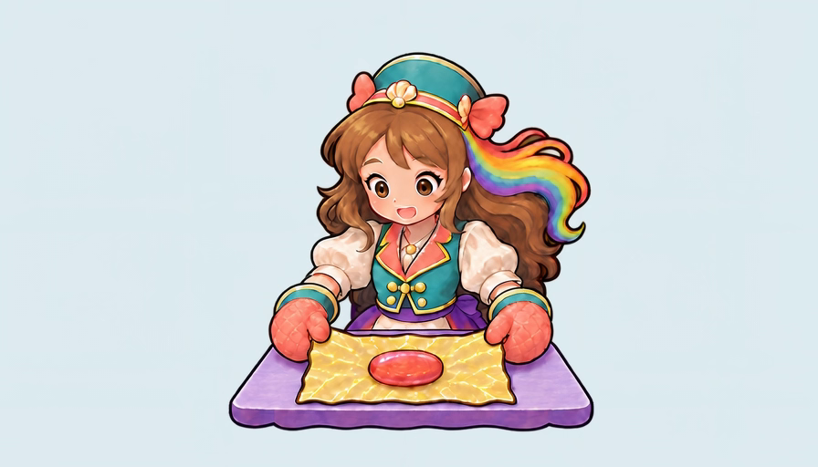
Frame0 · 0.000s · canvas4.5/5. Frame0 at0.000s: Intact opening: both mittens hold outer sheet corners and the red oval is exposed. Individual reference-canvas opinion only; no whole-action or current-game acceptance.
| Individual component | Score | Evaluation |
|---|---|---|
| identity_style | 4.4/5 | Painted face, hat, brown hair/rainbow ribbon and costume remain recognizable. Puff sleeves, mitten/quilt/vest highlights and a faint halo/mat artifact change during the take; no current-game style acceptance. |
| attention | 3.2/5 | Eyes remain broadly forward and mouth stays open; no clear sustained eyeline to the paper contact point is established. |
| connected_mittens | 4.1/5 | Two forearms remain connected and mittens hold paper. Late thumb/cloth shapes morph; contact stays at outer corners rather than useful long-edge/neck locations. |
| supported_sweet | 4.4/5 | The red oval remains supported near its starting place through the take. It stays exposed; preservation of a stationary sweet is not the wrapping action. |
| table_and_material | 4.2/5 | Lavender table and golden paper remain recognizable, with small edge/highlight changes and faint mat artifacts. No gross table jump like the earlier pose-key study. |
| long_edge_fold | 1.8/5 | No long-edge closure encloses the sweet. The local model lifts the two outer corners and leaves a rectangular gold sheet beneath a red oval through the final frame. |
| slide_to_necks | 1.8/5 | Mittens never travel to narrow attached wrapper necks because no enclosed belly or neck structure is formed. |
| opposing_twist | 1.5/5 | No opposing wrist roll tightens neck pleats. Small glove movements on a flat corner-held sheet cannot stand in for twisting. |
| release_result | 1.8/5 | Last frame retains both gloves on outer sheet edges and the exposed red sweet. No completed wrapper is released and inspected. |
| whole_reference_action | 2.4/5 | Complete41-frame take fails the required fold-slide-twist-release. Smooth corner lifting and source resemblance cannot average away the missing job verb. Rejected and unbound. |
Frame0 at0.000s: Intact opening: both mittens hold outer sheet corners and the red oval is exposed. Individual reference-canvas opinion only; no whole-action or current-game acceptance.
Frame1 at0.042s: Opening contact remains; gold sheet and red oval retain the initial broad layout. Individual reference-canvas opinion only; no whole-action or current-game acceptance.
Frame2 at0.083s: Head and mitten edges shift slightly; the paper remains flat under the exposed sweet. Individual reference-canvas opinion only; no whole-action or current-game acceptance.
Frame3 at0.125s: Both corner grips persist with minor cloth/highlight change; no enclosing long-edge fold. Individual reference-canvas opinion only; no whole-action or current-game acceptance.
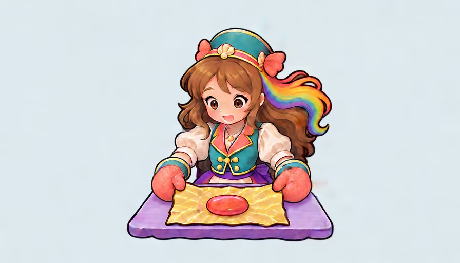
Frame4 at0.167s: The supporting table remains legible while the mittens still grip the outer corners. Individual reference-canvas opinion only; no whole-action or current-game acceptance.
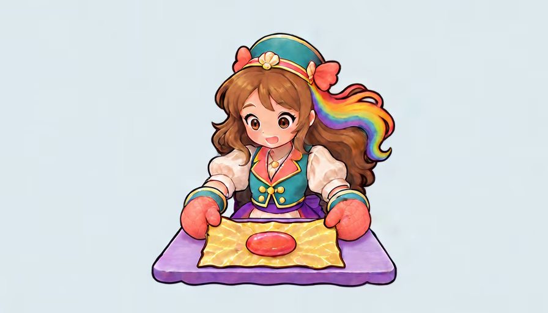
Frame5 at0.208s: Paper center stays open; hand posture and painted highlights fluctuate without a fold. Individual reference-canvas opinion only; no whole-action or current-game acceptance.
Frame6 at0.250s: Near-held corner contact continues; the original red oval remains wholly visible. Individual reference-canvas opinion only; no whole-action or current-game acceptance.
Frame7 at0.292s: The sheet remains rectangular and open; no hand travels to an attached wrapper neck. Individual reference-canvas opinion only; no whole-action or current-game acceptance.
Frame8 at0.333s: Torso and glove highlights shift subtly; both grips still own sheet corners. Individual reference-canvas opinion only; no whole-action or current-game acceptance.
Frame9 at0.375s: Both mittens stay outside the sweet; neither long edge has closed over its belly. Individual reference-canvas opinion only; no whole-action or current-game acceptance.
Frame10 at0.417s: The paper stays open despite the prescribed first fold interval nearing its end. Individual reference-canvas opinion only; no whole-action or current-game acceptance.
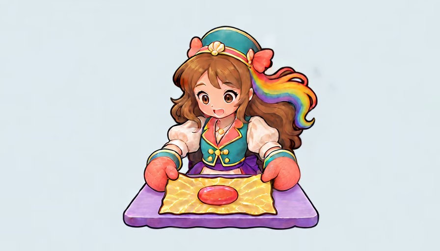
Frame11 at0.458s: The red sweet is still exposed; no semantic fold payoff is visible. Individual reference-canvas opinion only; no whole-action or current-game acceptance.
Frame12 at0.500s: Right forearm starts moving and the right corner lifts; the long sheet edges stay open. Individual reference-canvas opinion only; no whole-action or current-game acceptance.
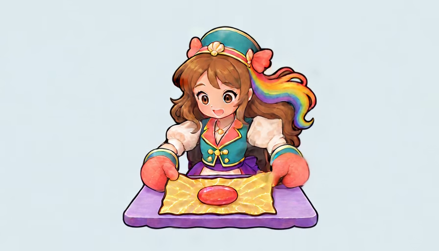
Frame13 at0.542s: Right mitten raises its outside corner and the puff sleeve changes shape; no enclosure. Individual reference-canvas opinion only; no whole-action or current-game acceptance.
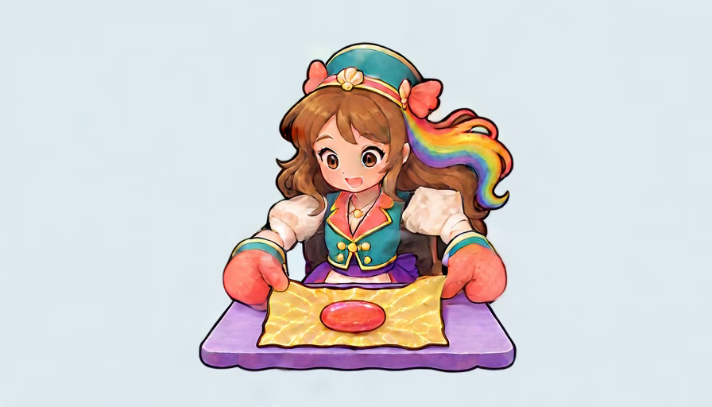
Frame14 at0.583s: Both elbows widen, lifting outer paper corners rather than folding long edges around the sweet. Individual reference-canvas opinion only; no whole-action or current-game acceptance.
Frame15 at0.625s: Connected mittens spread outward; the open gold sheet remains under the red oval. Individual reference-canvas opinion only; no whole-action or current-game acceptance.
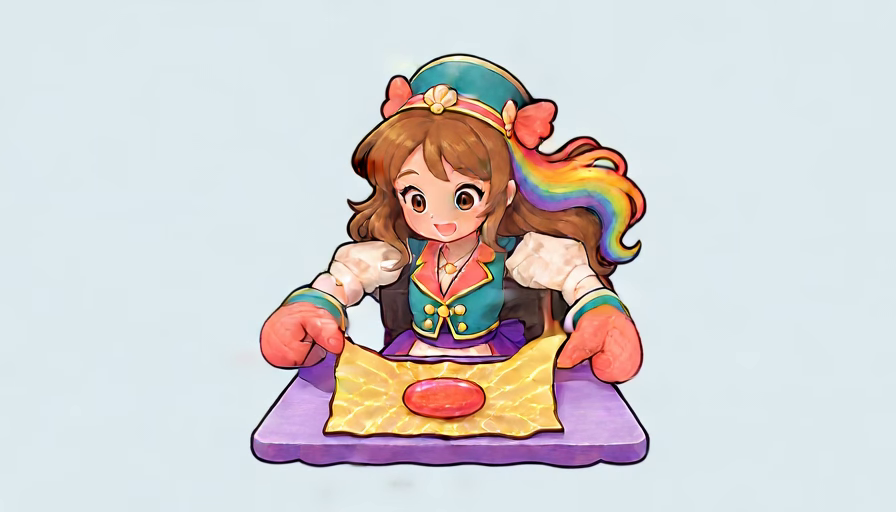
Frame16 at0.667s: Raised corner grips widen further; no inward slide or narrow-neck formation occurs. Individual reference-canvas opinion only; no whole-action or current-game acceptance.
Frame17 at0.708s: The right paper corner rises while the opposite grip stays at the outer sheet edge. Individual reference-canvas opinion only; no whole-action or current-game acceptance.
Frame18 at0.750s: Both arms reach outward around an open sheet; the central sweet remains exposed. Individual reference-canvas opinion only; no whole-action or current-game acceptance.
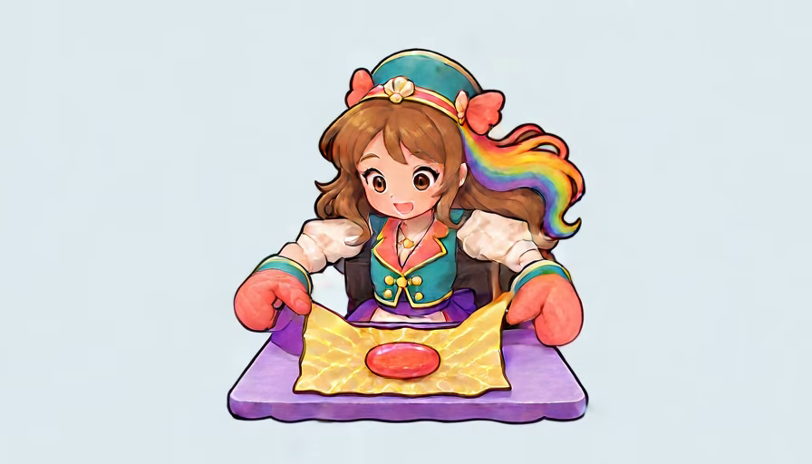
Frame19 at0.792s: Raised corners persist and the paper center remains flat; this does not pinch wrapper necks. Individual reference-canvas opinion only; no whole-action or current-game acceptance.
Frame20 at0.833s: Both gloves continue holding distant corners; no contact migrates inward to the sweet. Individual reference-canvas opinion only; no whole-action or current-game acceptance.
Frame21 at0.875s: Corner lifting settles slightly, but the sheet remains open and the red oval unchanged. Individual reference-canvas opinion only; no whole-action or current-game acceptance.
Frame22 at0.917s: Right thumb/grip elongates along a raised corner; no enclosed belly or untwisted neck exists. Individual reference-canvas opinion only; no whole-action or current-game acceptance.
Frame23 at0.958s: Hands move closer to the same outside corners; the intended counter-twist has no neck target. Individual reference-canvas opinion only; no whole-action or current-game acceptance.
Frame24 at1.000s: The sheet lifts along its side corners, retaining an open rectangular center. Individual reference-canvas opinion only; no whole-action or current-game acceptance.
Frame25 at1.042s: Both coral mittens still grip sheet corners; there is no opposing roll around narrow necks. Individual reference-canvas opinion only; no whole-action or current-game acceptance.
Frame26 at1.083s: Lower sleeve and thumb shapes vary while the gold center remains open. Individual reference-canvas opinion only; no whole-action or current-game acceptance.
Frame27 at1.125s: Same corner-held sheet persists; no attached fan/neck structure has formed. Individual reference-canvas opinion only; no whole-action or current-game acceptance.
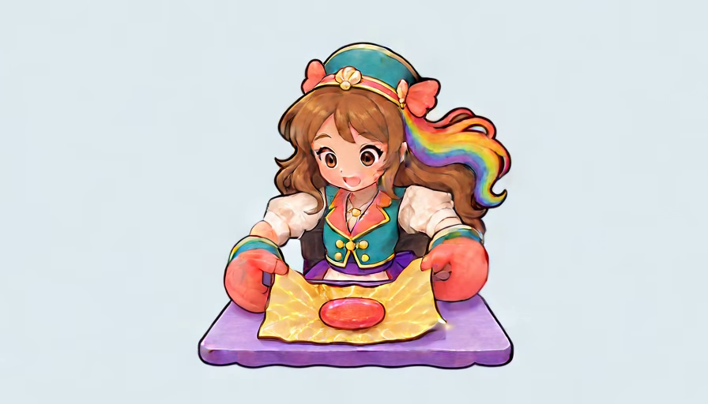
Frame28 at1.167s: Mittens draw slightly inward but remain on the outer paper; red sweet stays exposed. Individual reference-canvas opinion only; no whole-action or current-game acceptance.
Frame29 at1.208s: The right outer corner flexes while the paper still lies open under the sweet. Individual reference-canvas opinion only; no whole-action or current-game acceptance.
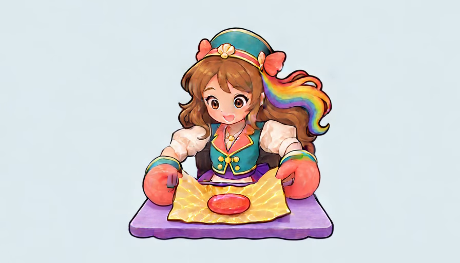
Frame30 at1.250s: Glove thumb outlines reshape; the sequence still lacks an enclosed gold oval. Individual reference-canvas opinion only; no whole-action or current-game acceptance.
Frame31 at1.292s: Small inward hand motion does not create either narrow neck or a readable wrist counter-roll. Individual reference-canvas opinion only; no whole-action or current-game acceptance.
Frame32 at1.333s: The paper center is still open; both hands remain outside the sweet near corners. Individual reference-canvas opinion only; no whole-action or current-game acceptance.
Frame33 at1.375s: Hands begin settling at outer sheet edges, with no completed wrapper to release. Individual reference-canvas opinion only; no whole-action or current-game acceptance.
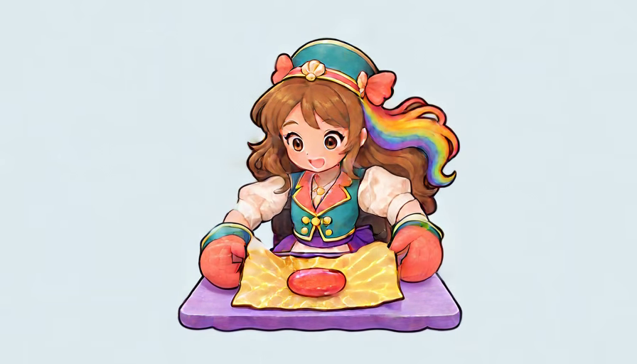
Frame34 at1.417s: The right paper edge flexes; the original red oval is fully visible rather than enclosed. Individual reference-canvas opinion only; no whole-action or current-game acceptance.
Frame35 at1.458s: Both glove grips remain on the sheet; no honest release of a finished sweet occurs. Individual reference-canvas opinion only; no whole-action or current-game acceptance.
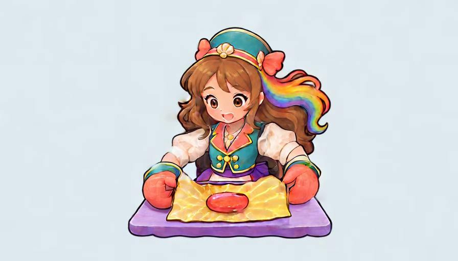
Frame36 at1.500s: The hands lower toward the outside corners; the sheet and exposed red oval remain. Individual reference-canvas opinion only; no whole-action or current-game acceptance.
Frame37 at1.542s: End settling preserves an open sheet, not the directed wrapped-and-released result. Individual reference-canvas opinion only; no whole-action or current-game acceptance.
Frame38 at1.583s: Glove/fold highlights fluctuate and faint mat artifacts persist; no wrapping payoff. Individual reference-canvas opinion only; no whole-action or current-game acceptance.
Frame39 at1.625s: Both mittens still contact outer edges; no fan, neck or completed gold belly is present. Individual reference-canvas opinion only; no whole-action or current-game acceptance.
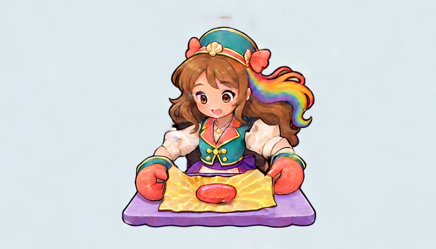
Frame40 at1.667s: Final canvas ends with the original red sweet exposed on an open sheet, both gloves still holding it. Individual reference-canvas opinion only; no whole-action or current-game acceptance.
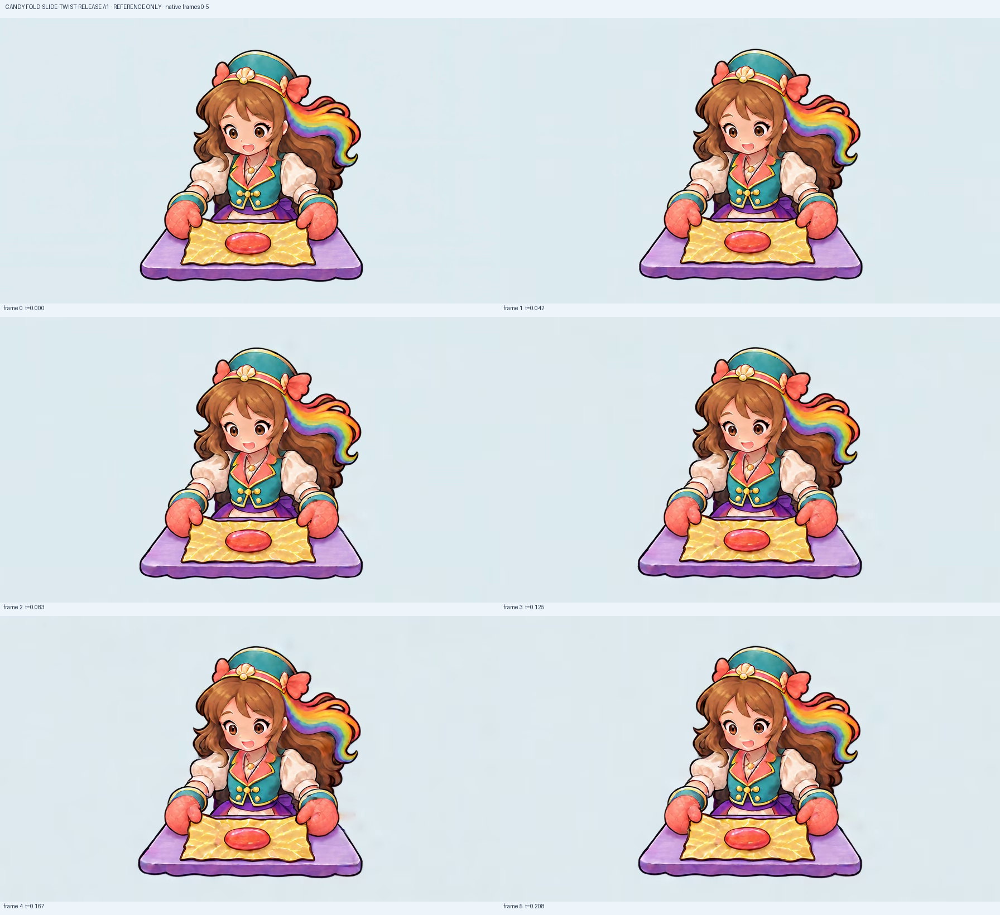
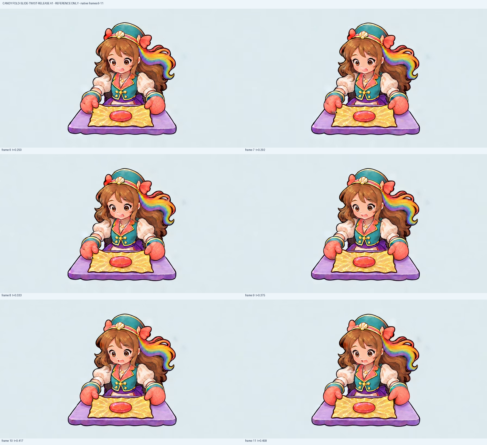
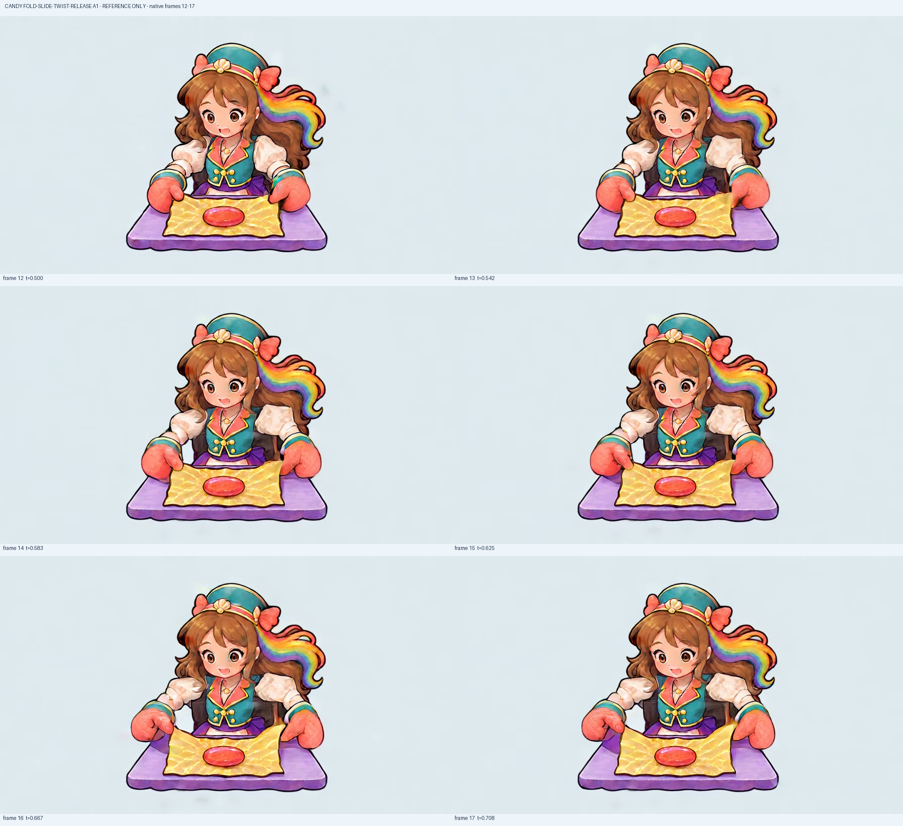
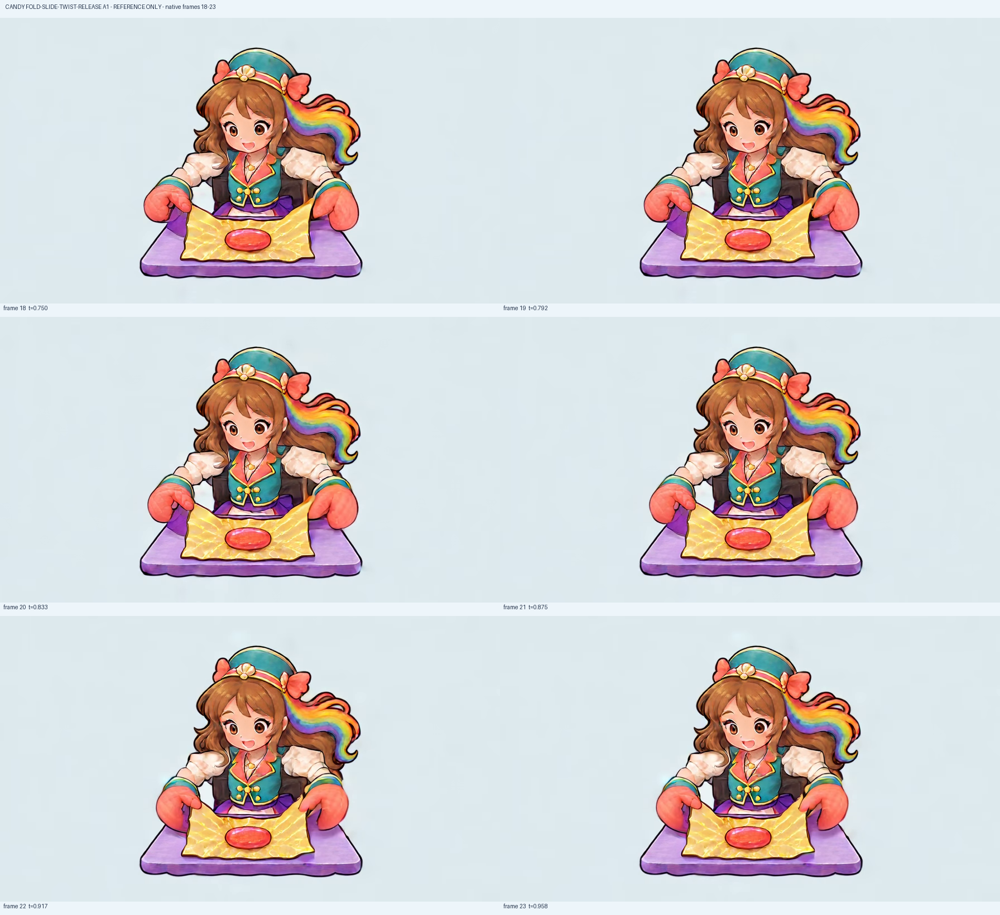
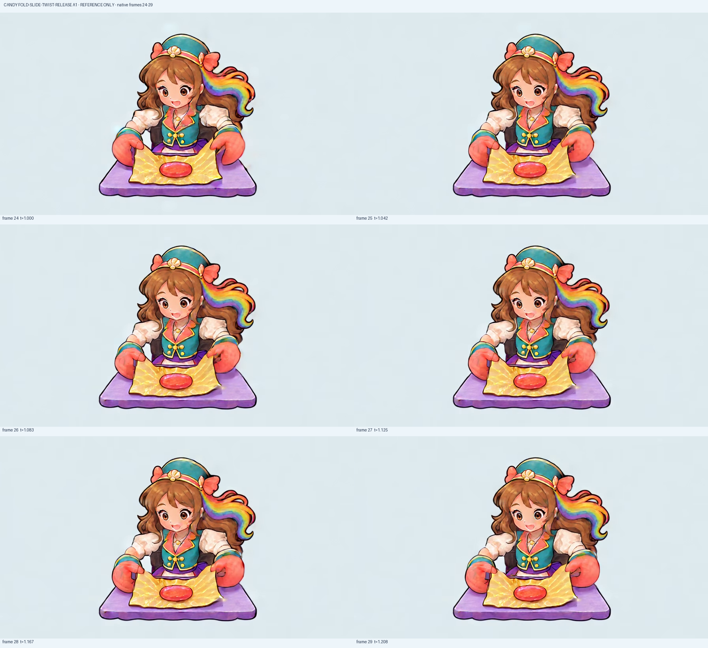
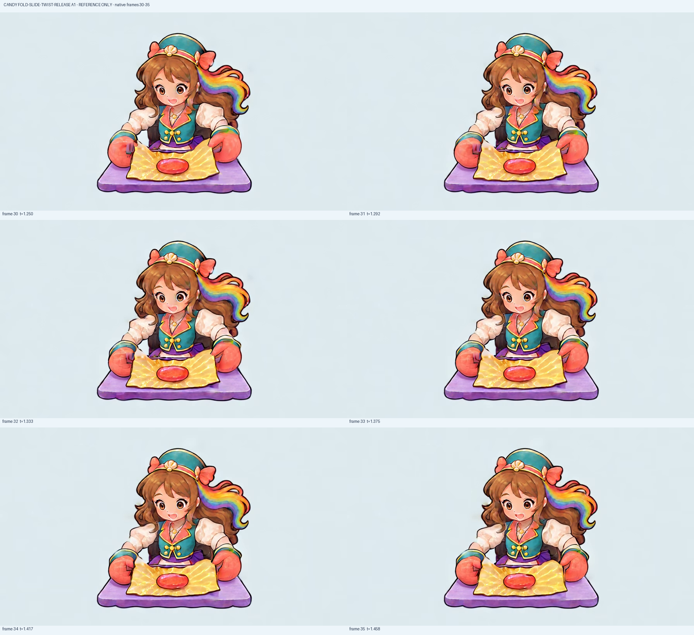
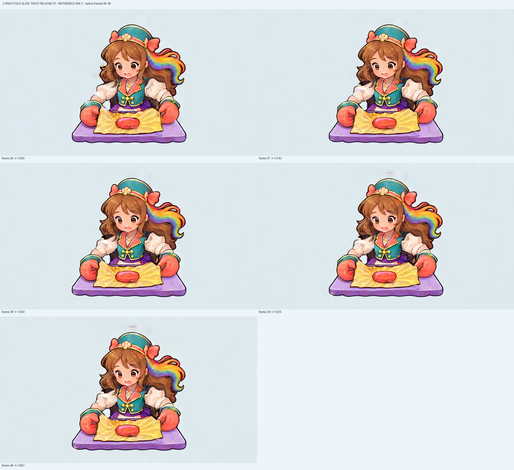
All frame/component scores · Native render receipt · Bound prompt/input/workflow
ALL41_NATIVE_FRAMES_REVIEWED_FAR_FOLD_COMPONENT_REJECTED · 1.8/5. Reference-only, unbound.
All seven original-size boards inspected in order and three full native details inspected separately. This is a local motion reference substep only. No useful fold occurs; neck grip, counter-twist and release were outside this component and remain required for the original complete wrapping goal. No cinematic delivery, source-score transfer, ordinary game/route/device/child/owner acceptance.
Native video control ready; no interpolated or synthetic frames.
Frame0 · 0.000s · canvas4.5/5. Frame 0 at 0.000s: Intact far-edge grip and opposite mitten beside the exposed oval; starting tableau only. Individual reference-canvas opinion only; not a useful-action or in-game pass.
| Individual component | Score | Evaluation |
|---|---|---|
| identity_and_costume | 4.3/5 | Recognizable child/costume persist. Cap, bows, face and costume contours shimmer; attractive individual frames do not establish useful work. |
| connected_mittens | 4.4/5 | Exactly two mittened hands remain connected through sleeves. Their stationary topology is stronger than the missing action. |
| starting_far_edge_grip | 4.4/5 | Left mitten holds a raised far-paper crease; right mitten supports beside the oval. This is a useful starting pose only. |
| far_edge_forward_fold | 1.5/5 | No continuous forward/downward sweep. Every frame leaves the same red oval exposed; the prescribed verb is absent. |
| sweet_support | 4.4/5 | Same sweet remains supported on the paper/worktop; it is not lifted or dropped. Support alone cannot pass wrapping. |
| closed_belly_payoff | 1.5/5 | The endpoint repeats an open sheet. No gold flap covers the oval and no enclosing seam exists. |
| contact_and_prop_stability | 4.1/5 | Broad grip/support layout remains stable, but tiny outline/highlight changes are not measured anchor compliance or a material fold. |
| attention | 3.8/5 | Eyes remain generally open with a fixed expression; no sustained task-specific attention beat explains a meaningful hand change. |
| gold_paper_and_table | 4.3/5 | Warm gold crinkled sheet and lavender support agree broadly with the wrapper style. Material resemblance is insufficient when the sheet never wraps. |
| whole_far_fold_component | 1.8/5 | Rejected: required far-edge fold and closed-belly payoff are absent throughout all 41 native canvases. Do not average the stronger identity/support scores into action acceptance. |
Frame 0 at 0.000s: Intact far-edge grip and opposite mitten beside the exposed oval; starting tableau only. Individual reference-canvas opinion only; not a useful-action or in-game pass.
Frame 1 at 0.042s: Both hand contacts persist; no flap crosses the sweet. Individual reference-canvas opinion only; not a useful-action or in-game pass.
Frame 2 at 0.083s: Head and bow begin tiny contour changes while the grasp stays fixed. Individual reference-canvas opinion only; not a useful-action or in-game pass.
Frame 3 at 0.125s: Far flap remains upright at the same grip; red surface wholly exposed. Individual reference-canvas opinion only; not a useful-action or in-game pass.
Frame 4 at 0.167s: No forward hand travel or flap rotation toward the viewer. Individual reference-canvas opinion only; not a useful-action or in-game pass.
Frame 5 at 0.208s: The gold sheet remains spread flat around the exposed sweet. Individual reference-canvas opinion only; not a useful-action or in-game pass.
Frame 6 at 0.250s: Left grip and right support remain readable; no useful fold begins. Individual reference-canvas opinion only; not a useful-action or in-game pass.
Frame 7 at 0.292s: Cap and bow shimmer slightly while the task silhouette stays unchanged. Individual reference-canvas opinion only; not a useful-action or in-game pass.
Frame 8 at 0.333s: Tiny light smears appear outside the cap; paper still open. Individual reference-canvas opinion only; not a useful-action or in-game pass.
Frame 9 at 0.375s: Right mitten continues bracing beside the same uncovered oval. Individual reference-canvas opinion only; not a useful-action or in-game pass.
Frame 10 at 0.417s: Head and sleeve contours fluctuate without corresponding work. Individual reference-canvas opinion only; not a useful-action or in-game pass.
Frame 11 at 0.458s: Far flap has not advanced beyond its starting raised edge. Individual reference-canvas opinion only; not a useful-action or in-game pass.
Frame 12 at 0.500s: No semantic closure is visible at one-half second. Individual reference-canvas opinion only; not a useful-action or in-game pass.
Frame 13 at 0.542s: The native detail confirms both mittens hold their initial positions. Individual reference-canvas opinion only; not a useful-action or in-game pass.
Frame 14 at 0.583s: Cap/bow perimeter softens; golden paper remains on the tabletop. Individual reference-canvas opinion only; not a useful-action or in-game pass.
Frame 15 at 0.625s: Paper highlight flicker does not represent a material fold. Individual reference-canvas opinion only; not a useful-action or in-game pass.
Frame 16 at 0.667s: Forearms remain connected; the sweet stays exposed. Individual reference-canvas opinion only; not a useful-action or in-game pass.
Frame 17 at 0.708s: Stationary grip continues beyond the intended action midpoint. Individual reference-canvas opinion only; not a useful-action or in-game pass.
Frame 18 at 0.750s: No forward travel of the held far-long edge. Individual reference-canvas opinion only; not a useful-action or in-game pass.
Frame 19 at 0.792s: Body details vary slightly; no paper covers the red surface. Individual reference-canvas opinion only; not a useful-action or in-game pass.
Frame 20 at 0.833s: The left flap crease stays local to the grip. Individual reference-canvas opinion only; not a useful-action or in-game pass.
Frame 21 at 0.875s: Right support remains beside the sweet; no fold payoff. Individual reference-canvas opinion only; not a useful-action or in-game pass.
Frame 22 at 0.917s: Outer gold-sheet contour is still fully spread and rectangular. Individual reference-canvas opinion only; not a useful-action or in-game pass.
Frame 23 at 0.958s: Task contact stays at the same initial far-edge corner. Individual reference-canvas opinion only; not a useful-action or in-game pass.
Frame 24 at 1.000s: Native detail at one second confirms the oval remains wholly exposed. Individual reference-canvas opinion only; not a useful-action or in-game pass.
Frame 25 at 1.042s: No far-edge-over-belly or final seam is formed. Individual reference-canvas opinion only; not a useful-action or in-game pass.
Frame 26 at 1.083s: Mittens remain attached but motion has stalled. Individual reference-canvas opinion only; not a useful-action or in-game pass.
Frame 27 at 1.125s: Gold highlights shimmer while the paper geometry remains open. Individual reference-canvas opinion only; not a useful-action or in-game pass.
Frame 28 at 1.167s: The model changes incidental costume contour rather than the requested flap. Individual reference-canvas opinion only; not a useful-action or in-game pass.
Frame 29 at 1.208s: The sweet remains exposed as the requested closure interval ends. Individual reference-canvas opinion only; not a useful-action or in-game pass.
Frame 30 at 1.250s: There is no covering flap across the red oval. Individual reference-canvas opinion only; not a useful-action or in-game pass.
Frame 31 at 1.292s: Same raised corner held, opposite mitten remains beside the candy. Individual reference-canvas opinion only; not a useful-action or in-game pass.
Frame 32 at 1.333s: Late cap and bow outlines change slightly; no paper sweep. Individual reference-canvas opinion only; not a useful-action or in-game pass.
Frame 33 at 1.375s: Left mitten has not moved forward over the same sweet. Individual reference-canvas opinion only; not a useful-action or in-game pass.
Frame 34 at 1.417s: No end-state enclosure despite the retained gold-paper material. Individual reference-canvas opinion only; not a useful-action or in-game pass.
Frame 35 at 1.458s: The exposed oval and spread sheet still repeat the initial task layout. Individual reference-canvas opinion only; not a useful-action or in-game pass.
Frame 36 at 1.500s: No closure exists before the final four frames. Individual reference-canvas opinion only; not a useful-action or in-game pass.
Frame 37 at 1.542s: Both grips stay fixed; this is an ineffective hold rather than the specified action. Individual reference-canvas opinion only; not a useful-action or in-game pass.
Frame 38 at 1.583s: Paper remains open and costume contours continue minor drift. Individual reference-canvas opinion only; not a useful-action or in-game pass.
Frame 39 at 1.625s: Final approach still provides no covering flap or useful payoff. Individual reference-canvas opinion only; not a useful-action or in-game pass.
Frame 40 at 1.667s: Final full native confirms the original red oval remains uncovered; far-edge fold fails. Individual reference-canvas opinion only; not a useful-action or in-game pass.
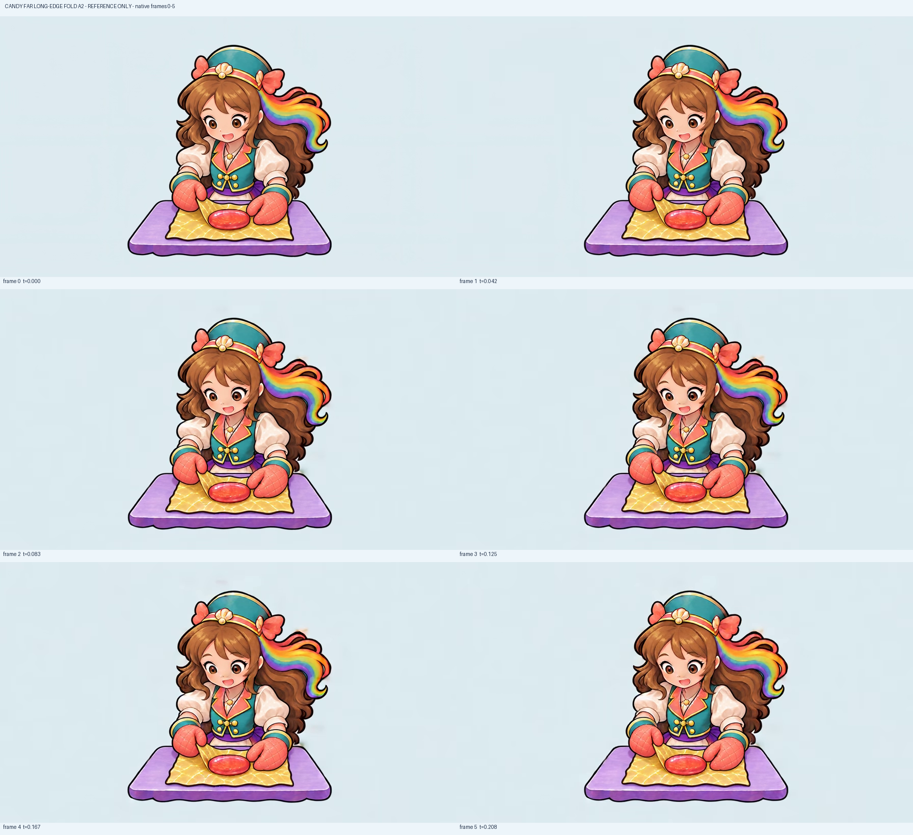
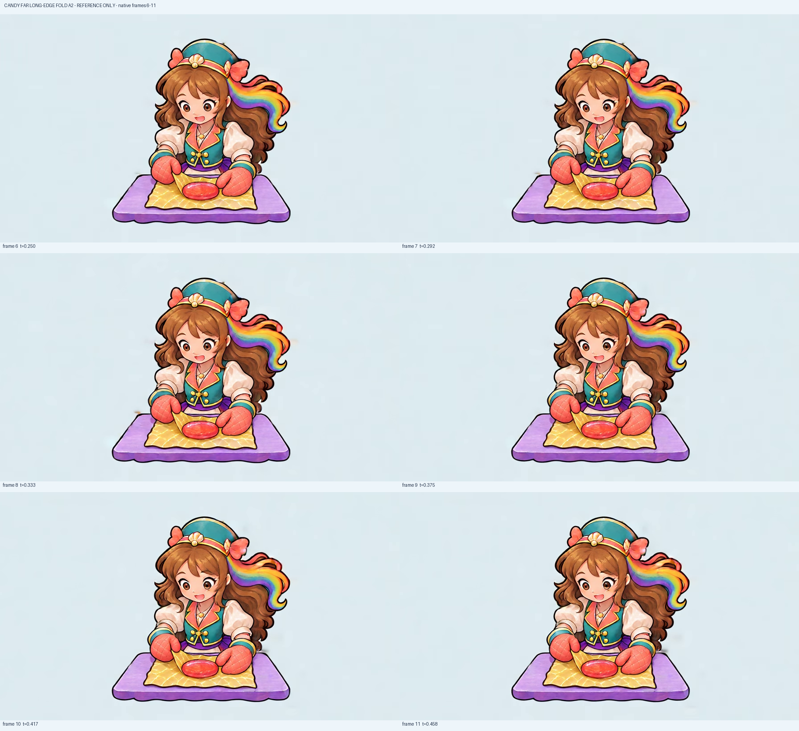
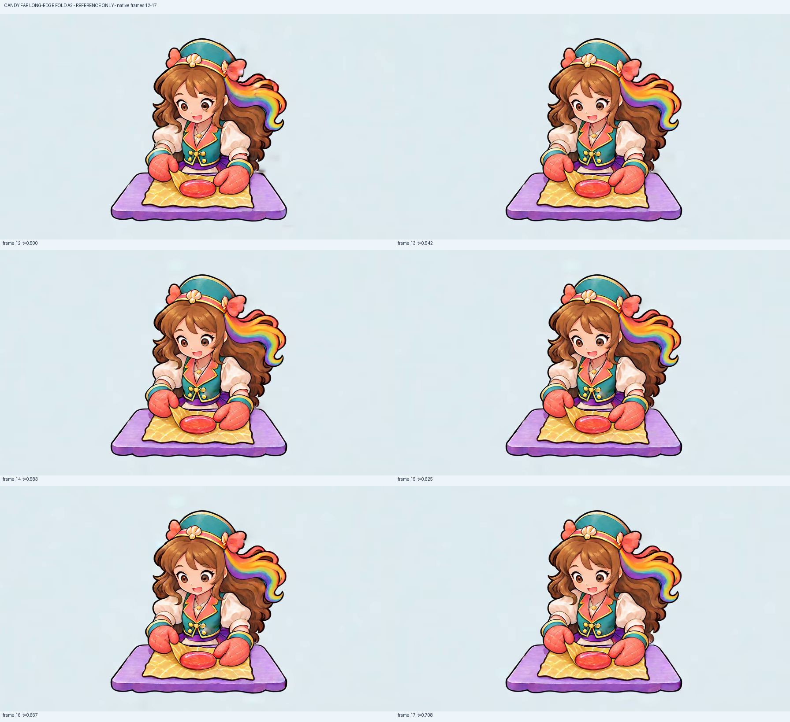
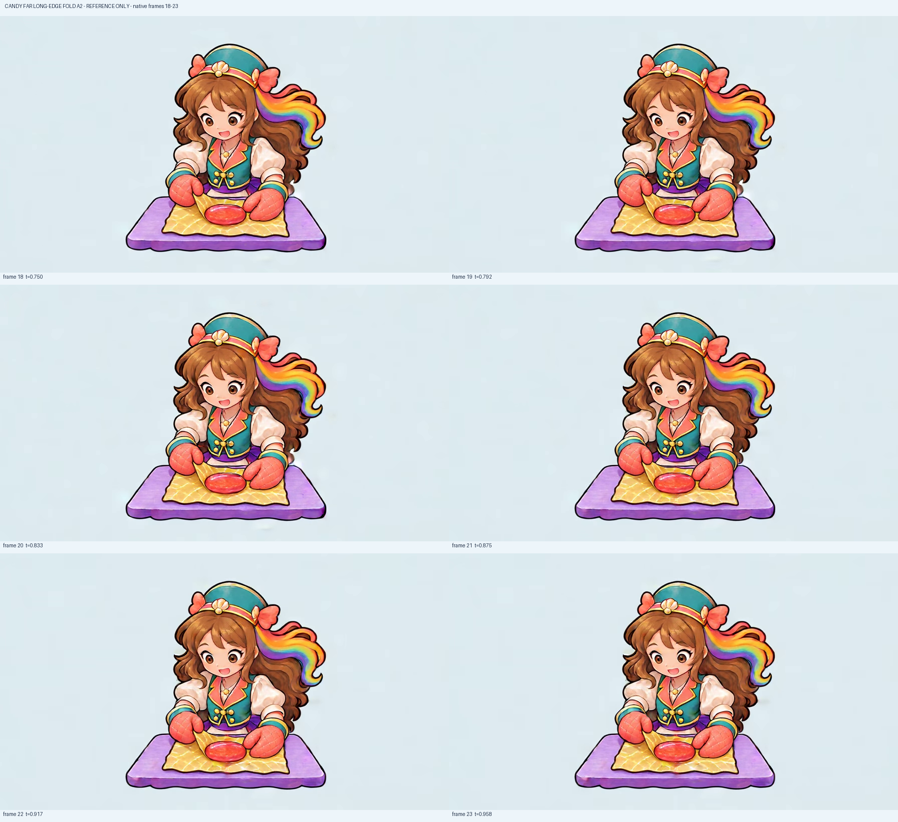
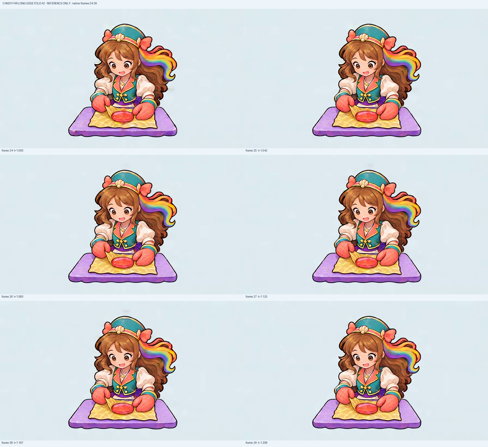
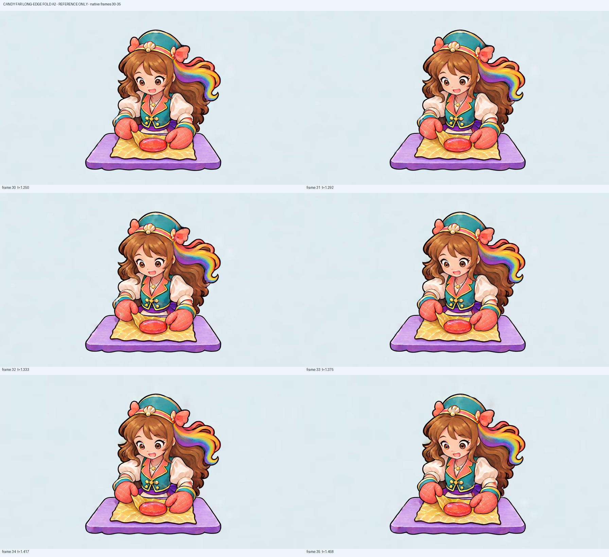
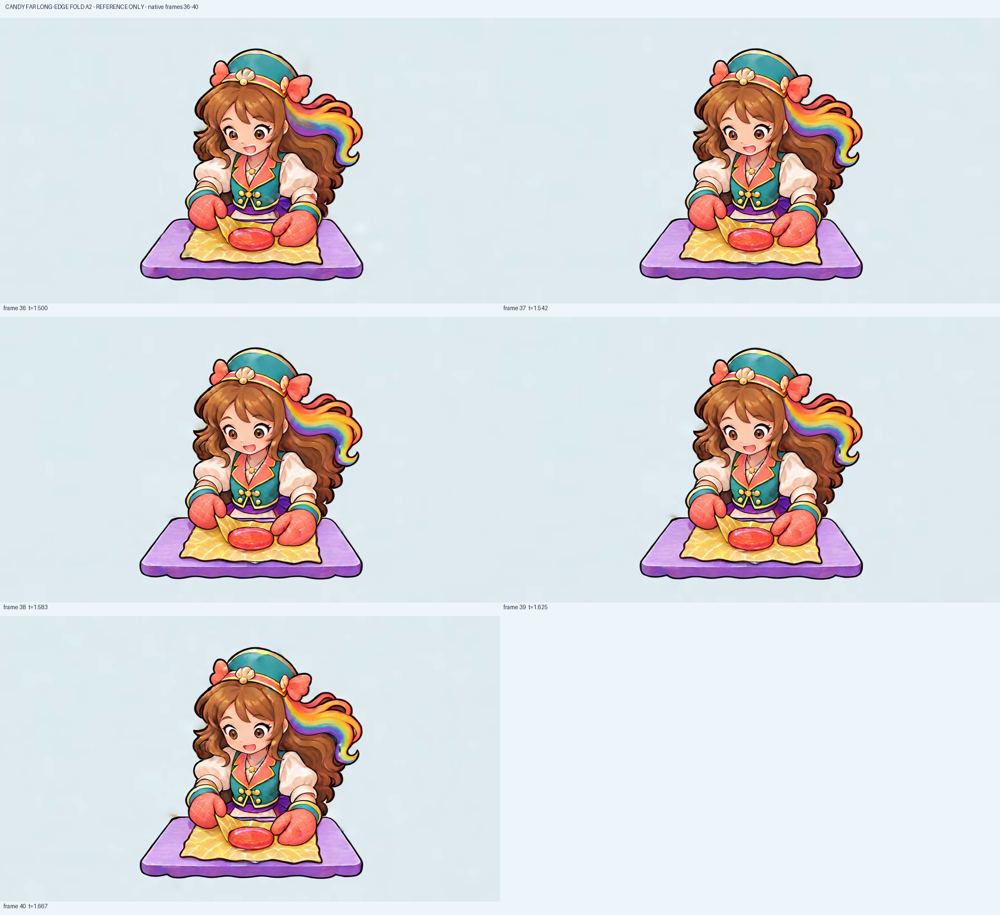
All frame/component scores · Native render receipt · Bound prompt/input/workflow
ALL41_NATIVE_FRAMES_REVIEWED_EXTRA_HANDS_COMPONENT_REJECTED · 1.5/5. Reference-only, unbound.
All41 native896x512 canvases directly inspected on7 non-resampled boards plus three individual original-size details. A3 is reference-only and rejected. Source4.5 never transfers to action. Current in-game WRAP2.8 and the original full folding/neck/twist/release workflow remain open.
Native video control ready; no interpolated or synthetic frames.

Frame0 · 0.000s · canvas4.5/5. Frame 0 at 0.000s: Intact initial partial-fold grip; two connected mittens and the same red crescent remain visible. Individual native-canvas opinion only; no useful-action/runtime acceptance.
| Individual component | Score | Evaluation |
|---|---|---|
| Character identity and stable complete silhouette | 3.8/5 | Roshan remains recognizable, but face/body contours drift and foreground duplication dominates the ending. |
| Exactly two connected mittens owned by Roshan | 1.0/5 | A third oversized mitten enters at frame11; a fourth arrives later. Their sleeves connect to off-screen bodies, not Roshan. |
| Initial lower-free-edge grasp | 4.2/5 | The starting partial-fold grasp is readable, though its exact over/under contact is small at this input scale. |
| Existing mitten carries the attached flap | 1.5/5 | Both authored mittens stay at the initial contact. The paper does not cross the remaining red crescent. |
| Same sweet supported on the same table | 4.3/5 | The central sweet and gold sheet remain supported, but unsupported foreground arms obscure their evidence. |
| Gold paper occludes the remaining sweet surface | 1.5/5 | The red crescent remains exposed throughout all41 canvases; no completed fold occurs. |
| Release leaves the useful fold intact | 1.5/5 | Roshan never opens the original grip or leaves a closed fold. Extra arms are not a release. |
| Attention remains on useful task change | 3.9/5 | Early gaze points toward the task, but later duplicated anatomy and body drift distract from any useful contact. |
| Golden paper and painted quilted material continuity | 4.2/5 | Central gold and quilted material largely survive. Extra foreground mittens have a different oversized, muddier finish. |
| Whole far-fold closure/release component | 1.5/5 | Rejected: no closure or release, plus catastrophic extra-hand ownership. It cannot contribute accepted pixels or motion to the actual wrapper. |
Frame 0 at 0.000s: Intact initial partial-fold grip; two connected mittens and the same red crescent remain visible. Individual native-canvas opinion only; no useful-action/runtime acceptance.
Frame 1 at 0.042s: Roshan retains the initial grip and exposed red crescent; minute face/paper contour changes do not perform a fold. Individual native-canvas opinion only; no useful-action/runtime acceptance.
Frame 2 at 0.083s: Roshan retains the initial grip and exposed red crescent; minute face/paper contour changes do not perform a fold. Individual native-canvas opinion only; no useful-action/runtime acceptance.
Frame 3 at 0.125s: Roshan retains the initial grip and exposed red crescent; minute face/paper contour changes do not perform a fold. Individual native-canvas opinion only; no useful-action/runtime acceptance.
Frame 4 at 0.167s: Roshan retains the initial grip and exposed red crescent; minute face/paper contour changes do not perform a fold. Individual native-canvas opinion only; no useful-action/runtime acceptance.
Frame 5 at 0.208s: Roshan retains the initial grip and exposed red crescent; minute face/paper contour changes do not perform a fold. Individual native-canvas opinion only; no useful-action/runtime acceptance.
Frame 6 at 0.250s: Roshan retains the initial grip and exposed red crescent; minute face/paper contour changes do not perform a fold. Individual native-canvas opinion only; no useful-action/runtime acceptance.
Frame 7 at 0.292s: Roshan retains the initial grip and exposed red crescent; minute face/paper contour changes do not perform a fold. Individual native-canvas opinion only; no useful-action/runtime acceptance.
Frame 8 at 0.333s: Roshan retains the initial grip and exposed red crescent; minute face/paper contour changes do not perform a fold. Individual native-canvas opinion only; no useful-action/runtime acceptance.
Frame 9 at 0.375s: Roshan retains the initial grip and exposed red crescent; minute face/paper contour changes do not perform a fold. Individual native-canvas opinion only; no useful-action/runtime acceptance.
Frame 10 at 0.417s: Roshan retains the initial grip and exposed red crescent; minute face/paper contour changes do not perform a fold. Individual native-canvas opinion only; no useful-action/runtime acceptance.
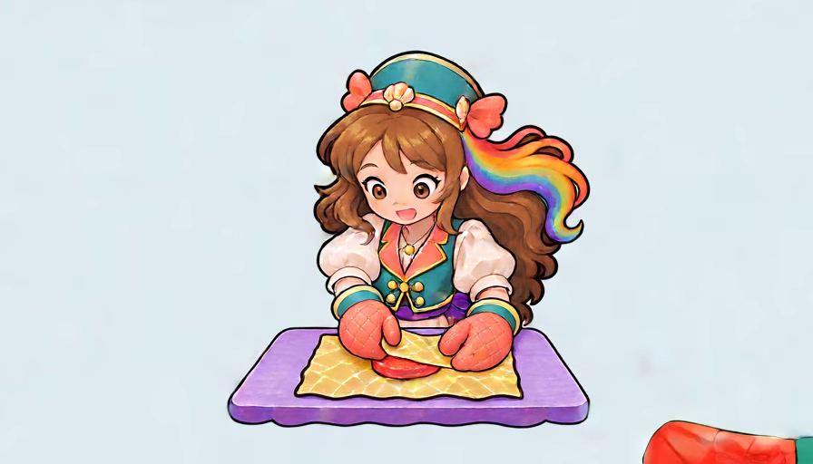
Frame 11 at 0.458s: An oversized third coral mitten intrudes from the lower/right border while both original mittens stay at the same grip. Individual native-canvas opinion only; no useful-action/runtime acceptance.
Frame 12 at 0.500s: An oversized third coral mitten intrudes from the lower/right border while both original mittens stay at the same grip. Individual native-canvas opinion only; no useful-action/runtime acceptance.
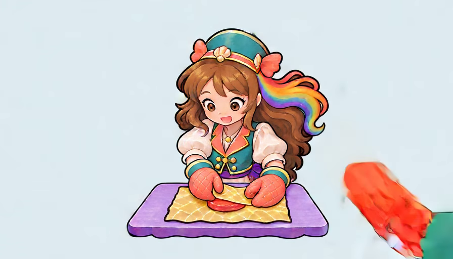
Frame 13 at 0.542s: An oversized third coral mitten intrudes from the lower/right border while both original mittens stay at the same grip. Individual native-canvas opinion only; no useful-action/runtime acceptance.
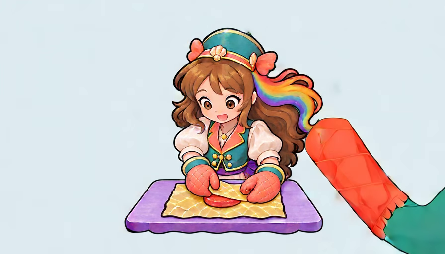
Frame 14 at 0.583s: A large unrelated coral mitten and teal sleeve occupy the right foreground; Roshan does not fold or release the paper. Individual native-canvas opinion only; no useful-action/runtime acceptance.
Frame 15 at 0.625s: A large unrelated coral mitten and teal sleeve occupy the right foreground; Roshan does not fold or release the paper. Individual native-canvas opinion only; no useful-action/runtime acceptance.
Frame 16 at 0.667s: A large unrelated coral mitten and teal sleeve occupy the right foreground; Roshan does not fold or release the paper. Individual native-canvas opinion only; no useful-action/runtime acceptance.
Frame 17 at 0.708s: A large unrelated coral mitten and teal sleeve occupy the right foreground; Roshan does not fold or release the paper. Individual native-canvas opinion only; no useful-action/runtime acceptance.
Frame 18 at 0.750s: A large unrelated coral mitten and teal sleeve occupy the right foreground; Roshan does not fold or release the paper. Individual native-canvas opinion only; no useful-action/runtime acceptance.
Frame 19 at 0.792s: A large unrelated coral mitten and teal sleeve occupy the right foreground; Roshan does not fold or release the paper. Individual native-canvas opinion only; no useful-action/runtime acceptance.
Frame 20 at 0.833s: A large unrelated coral mitten and teal sleeve occupy the right foreground; Roshan does not fold or release the paper. Individual native-canvas opinion only; no useful-action/runtime acceptance.
Frame 21 at 0.875s: A large unrelated coral mitten and teal sleeve occupy the right foreground; Roshan does not fold or release the paper. Individual native-canvas opinion only; no useful-action/runtime acceptance.
Frame 22 at 0.917s: Two oversized unrelated foreground mittens surround and increasingly obscure the table; Roshan still holds the original partly open wrapper. Individual native-canvas opinion only; no useful-action/runtime acceptance.
Frame 23 at 0.958s: Two oversized unrelated foreground mittens surround and increasingly obscure the table; Roshan still holds the original partly open wrapper. Individual native-canvas opinion only; no useful-action/runtime acceptance.
Frame 24 at 1.000s: Two oversized unrelated foreground mittens surround and increasingly obscure the table; Roshan still holds the original partly open wrapper. Individual native-canvas opinion only; no useful-action/runtime acceptance.
Frame 25 at 1.042s: Two oversized unrelated foreground mittens surround and increasingly obscure the table; Roshan still holds the original partly open wrapper. Individual native-canvas opinion only; no useful-action/runtime acceptance.
Frame 26 at 1.083s: Two oversized unrelated foreground mittens surround and increasingly obscure the table; Roshan still holds the original partly open wrapper. Individual native-canvas opinion only; no useful-action/runtime acceptance.
Frame 27 at 1.125s: Two oversized unrelated foreground mittens surround and increasingly obscure the table; Roshan still holds the original partly open wrapper. Individual native-canvas opinion only; no useful-action/runtime acceptance.
Frame 28 at 1.167s: Two oversized unrelated foreground mittens surround and increasingly obscure the table; Roshan still holds the original partly open wrapper. Individual native-canvas opinion only; no useful-action/runtime acceptance.
Frame 29 at 1.208s: Two oversized unrelated foreground mittens surround and increasingly obscure the table; Roshan still holds the original partly open wrapper. Individual native-canvas opinion only; no useful-action/runtime acceptance.
Frame 30 at 1.250s: Two oversized unrelated foreground mittens surround and increasingly obscure the table; Roshan still holds the original partly open wrapper. Individual native-canvas opinion only; no useful-action/runtime acceptance.
Frame 31 at 1.292s: Two oversized unrelated foreground mittens surround and increasingly obscure the table; Roshan still holds the original partly open wrapper. Individual native-canvas opinion only; no useful-action/runtime acceptance.
Frame 32 at 1.333s: Two oversized unrelated foreground mittens surround and increasingly obscure the table; Roshan still holds the original partly open wrapper. Individual native-canvas opinion only; no useful-action/runtime acceptance.
Frame 33 at 1.375s: Two oversized unrelated foreground mittens surround and increasingly obscure the table; Roshan still holds the original partly open wrapper. Individual native-canvas opinion only; no useful-action/runtime acceptance.
Frame 34 at 1.417s: Two oversized unrelated foreground mittens surround and increasingly obscure the table; Roshan still holds the original partly open wrapper. Individual native-canvas opinion only; no useful-action/runtime acceptance.
Frame 35 at 1.458s: Two oversized unrelated foreground mittens surround and increasingly obscure the table; Roshan still holds the original partly open wrapper. Individual native-canvas opinion only; no useful-action/runtime acceptance.
Frame 36 at 1.500s: Two oversized unrelated foreground mittens surround and increasingly obscure the table; Roshan still holds the original partly open wrapper. Individual native-canvas opinion only; no useful-action/runtime acceptance.
Frame 37 at 1.542s: Two oversized unrelated foreground mittens surround and increasingly obscure the table; Roshan still holds the original partly open wrapper. Individual native-canvas opinion only; no useful-action/runtime acceptance.
Frame 38 at 1.583s: Two oversized unrelated foreground mittens surround and increasingly obscure the table; Roshan still holds the original partly open wrapper. Individual native-canvas opinion only; no useful-action/runtime acceptance.
Frame 39 at 1.625s: Two oversized unrelated foreground mittens surround and increasingly obscure the table; Roshan still holds the original partly open wrapper. Individual native-canvas opinion only; no useful-action/runtime acceptance.
Frame 40 at 1.667s: Two oversized unrelated foreground mittens surround and increasingly obscure the table; Roshan still holds the original partly open wrapper. Individual native-canvas opinion only; no useful-action/runtime acceptance.
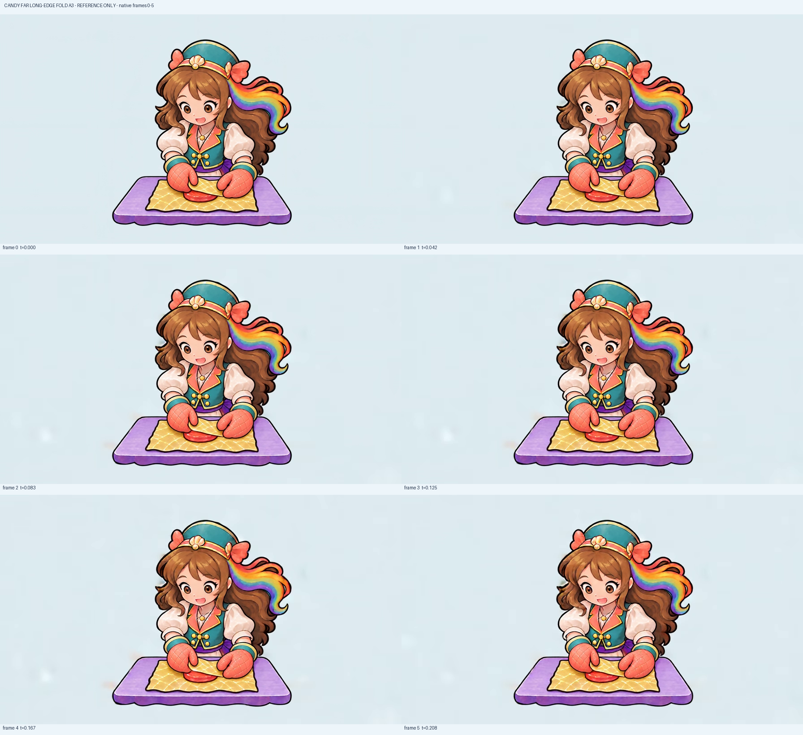
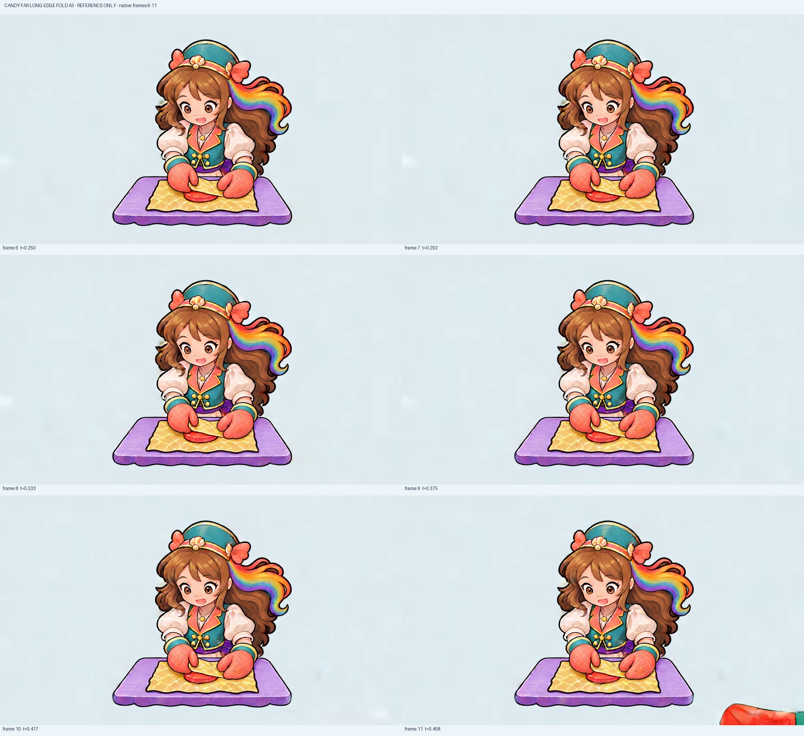
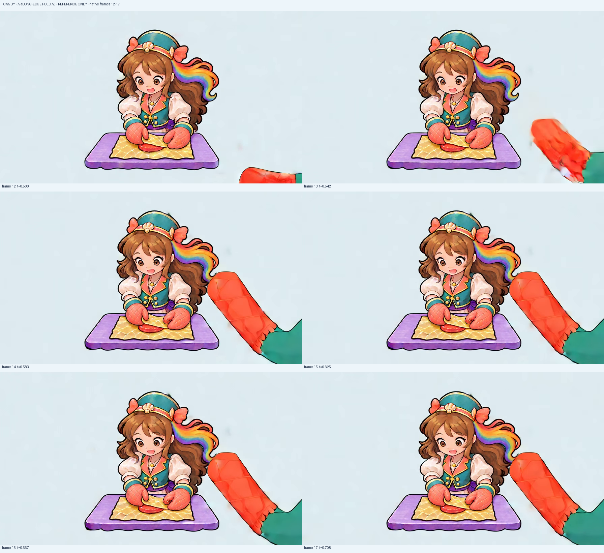
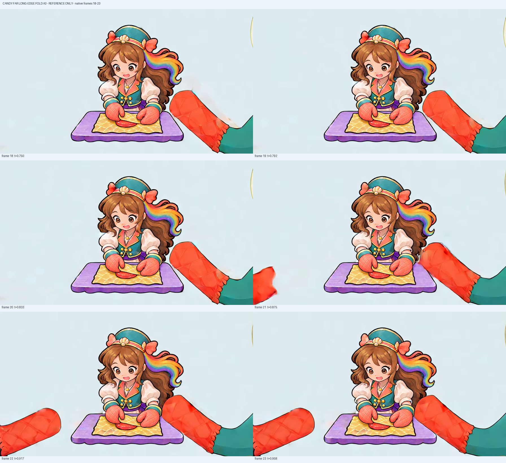
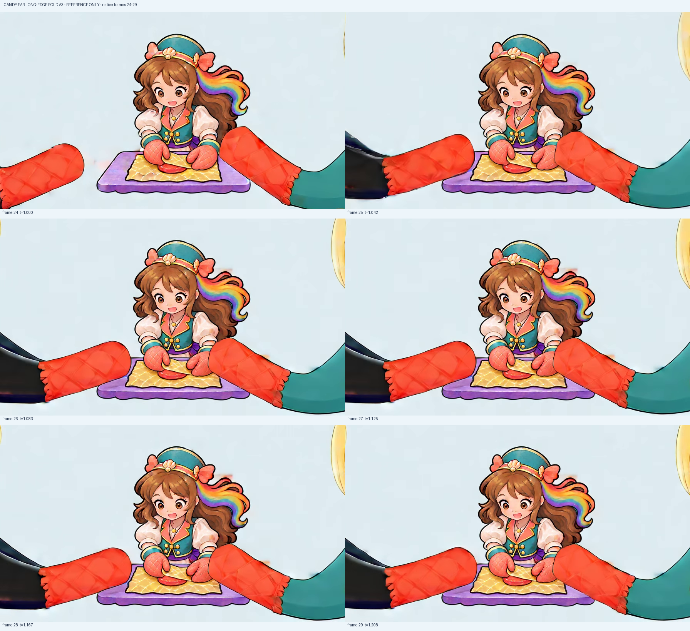
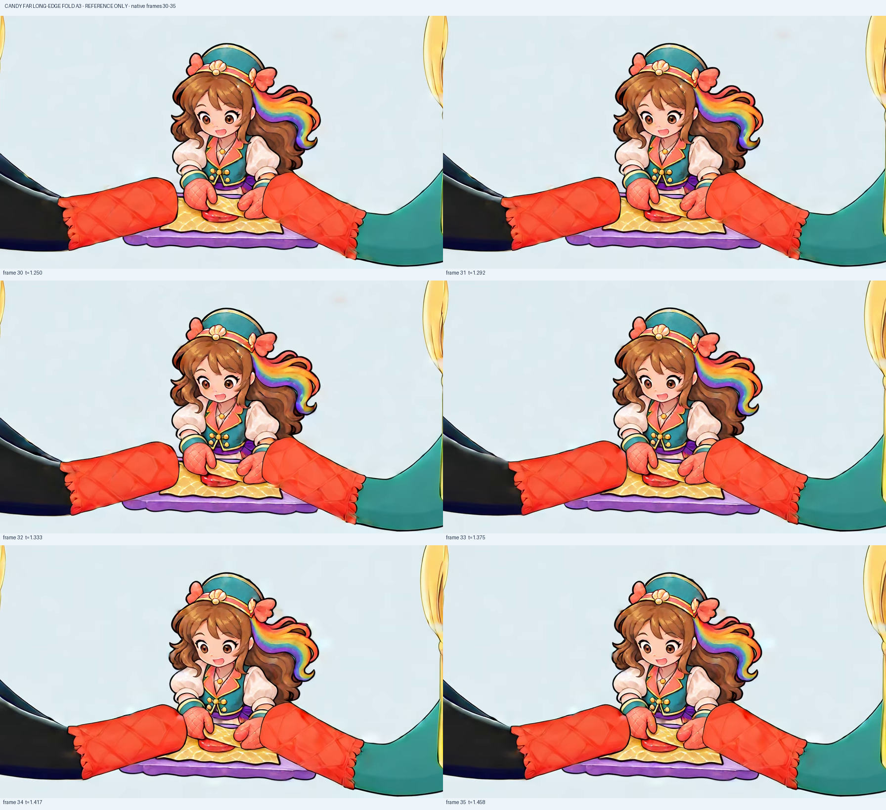
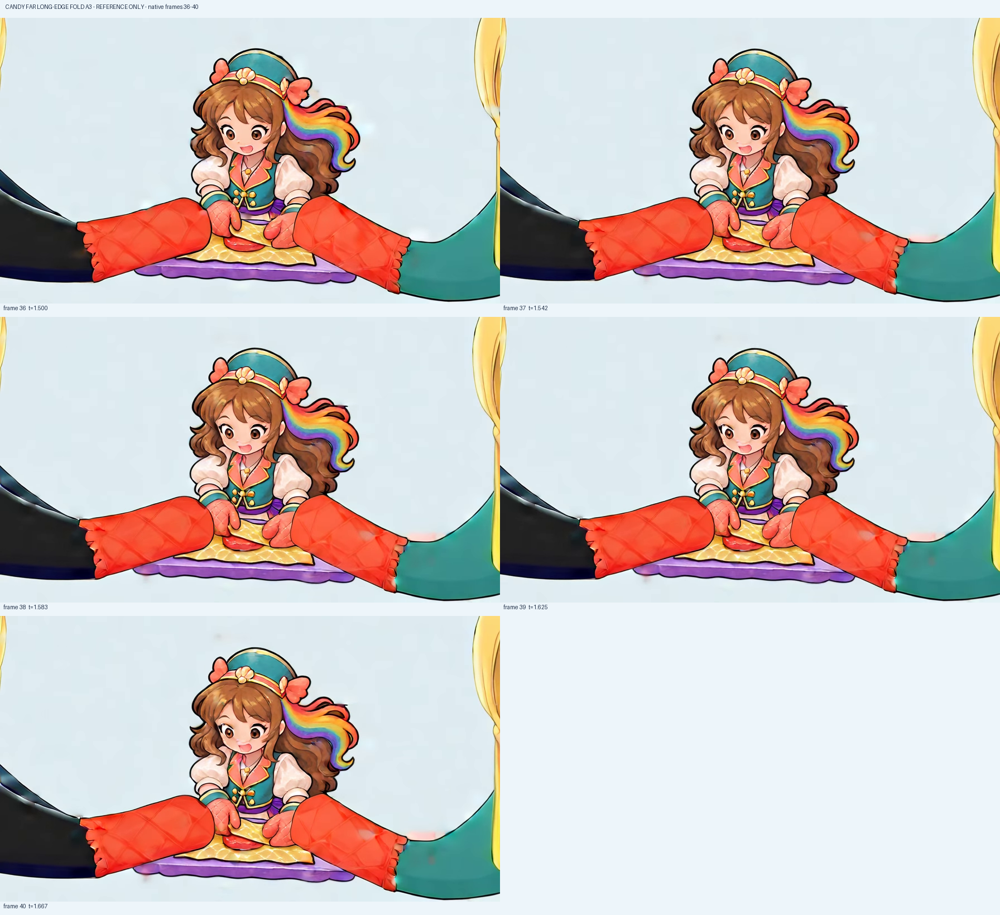
All frame/component scores · Native render receipt · Bound prompt/input/workflow
ALL41_NATIVE_FRAMES_REVIEWED_EXTERNAL_HANDS_AND_BODY_DISTORTION_REJECTED · 0.8/5. Reference-only, unbound.
All41 native896x512 canvases directly inspected on7 non-resampled boards plus original-size details1/13/40. Rejected reference-only A4; source4.5 never transfers to motion. Current in-game WRAP2.8 and original complete wrapper workflow remain open.
Native video control ready; no interpolated or synthetic frames.
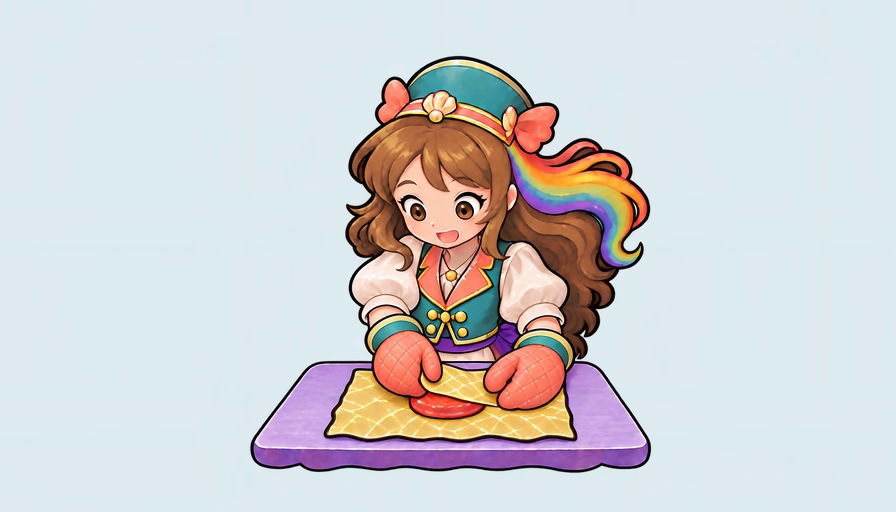
Frame0 · 0.000s · canvas4.5/5. Frame 0 at 0.000s: Intact starting partial-fold pose; this still is not useful motion. Complete native-canvas drafting opinion only; no runtime acceptance.
| Individual component | Score | Evaluation |
|---|---|---|
| Character identity and stable complete silhouette | 1.0/5 | The face/hat remain briefly recognizable, then the body and rainbow stretch into a different object. |
| Exactly two connected mittens owned by Roshan | 1.0/5 | A black-sleeved human hand enters at frame1; later two external hands manipulate Roshan. They do not belong to her authored arms. |
| Initial lower-free-edge grasp | 4.2/5 | Frame0 preserves the partial-fold still. This isolated starting contact cannot pass the action. |
| Existing mitten carries the attached flap | 1.0/5 | The authored mittens do not perform the requested fold; another person touches the character instead. |
| Same sweet supported on the same table | 2.0/5 | The table task persists initially, but the relevant contact and object continuity are lost as the character deforms. |
| Gold paper occludes the remaining sweet surface | 1.0/5 | There is no truthful attached-flap closure over the same sweet. |
| Release leaves the useful fold intact | 1.0/5 | There is no completed useful fold or release by Roshan’s original hand. |
| Attention remains on useful task change | 1.5/5 | External hands and identity drift dominate attention instead of a legible paper fold. |
| Golden paper and painted quilted material continuity | 1.5/5 | The human black sleeves and distorted rainbow/body replace the intended painted paper-and-mitten workflow. |
| Whole far-fold closure/release component | 0.8/5 | Rejected: unrelated human hands manipulate the character, which distorts; no useful wrapper fold or release occurs. |
Frame 0 at 0.000s: Intact starting partial-fold pose; this still is not useful motion. Complete native-canvas drafting opinion only; no runtime acceptance.
Frame 1 at 0.042s: An unrelated black-sleeved human hand enters from the upper left. Roshan’s two mittens remain at their original paper contact. Complete native-canvas drafting opinion only; no runtime acceptance.
Frame 2 at 0.083s: An unrelated black-sleeved human hand enters from the upper left. Roshan’s two mittens remain at their original paper contact. Complete native-canvas drafting opinion only; no runtime acceptance.
Frame 3 at 0.125s: The external hand touches the hat or rainbow hair instead of moving Roshan’s mitten and attached gold flap across the sweet. Complete native-canvas drafting opinion only; no runtime acceptance.
Frame 4 at 0.167s: The external hand touches the hat or rainbow hair instead of moving Roshan’s mitten and attached gold flap across the sweet. Complete native-canvas drafting opinion only; no runtime acceptance.
Frame 5 at 0.208s: The external hand touches the hat or rainbow hair instead of moving Roshan’s mitten and attached gold flap across the sweet. Complete native-canvas drafting opinion only; no runtime acceptance.
Frame 6 at 0.250s: The external hand touches the hat or rainbow hair instead of moving Roshan’s mitten and attached gold flap across the sweet. Complete native-canvas drafting opinion only; no runtime acceptance.
Frame 7 at 0.292s: The external hand touches the hat or rainbow hair instead of moving Roshan’s mitten and attached gold flap across the sweet. Complete native-canvas drafting opinion only; no runtime acceptance.
Frame 8 at 0.333s: The external hand touches the hat or rainbow hair instead of moving Roshan’s mitten and attached gold flap across the sweet. Complete native-canvas drafting opinion only; no runtime acceptance.
Frame 9 at 0.375s: The external hand touches the hat or rainbow hair instead of moving Roshan’s mitten and attached gold flap across the sweet. Complete native-canvas drafting opinion only; no runtime acceptance.
Frame 10 at 0.417s: The external hand draws a colorful strip across the chest; the sweet is not covered by the attached flap. Complete native-canvas drafting opinion only; no runtime acceptance.
Frame 11 at 0.458s: The external hand draws a colorful strip across the chest; the sweet is not covered by the attached flap. Complete native-canvas drafting opinion only; no runtime acceptance.
Frame 12 at 0.500s: The external hand draws a colorful strip across the chest; the sweet is not covered by the attached flap. Complete native-canvas drafting opinion only; no runtime acceptance.
Frame 13 at 0.542s: Roshan’s rainbow/body deforms into an elongated wrapped shape; the table task and original mitten contact lose continuity. Complete native-canvas drafting opinion only; no runtime acceptance.
Frame 14 at 0.583s: Roshan’s rainbow/body deforms into an elongated wrapped shape; the table task and original mitten contact lose continuity. Complete native-canvas drafting opinion only; no runtime acceptance.
Frame 15 at 0.625s: Roshan’s rainbow/body deforms into an elongated wrapped shape; the table task and original mitten contact lose continuity. Complete native-canvas drafting opinion only; no runtime acceptance.
Frame 16 at 0.667s: Roshan’s rainbow/body deforms into an elongated wrapped shape; the table task and original mitten contact lose continuity. Complete native-canvas drafting opinion only; no runtime acceptance.
Frame 17 at 0.708s: Roshan’s rainbow/body deforms into an elongated wrapped shape; the table task and original mitten contact lose continuity. Complete native-canvas drafting opinion only; no runtime acceptance.
Frame 18 at 0.750s: Roshan’s rainbow/body deforms into an elongated wrapped shape; the table task and original mitten contact lose continuity. Complete native-canvas drafting opinion only; no runtime acceptance.
Frame 19 at 0.792s: Roshan’s rainbow/body deforms into an elongated wrapped shape; the table task and original mitten contact lose continuity. Complete native-canvas drafting opinion only; no runtime acceptance.
Frame 20 at 0.833s: Roshan’s rainbow/body deforms into an elongated wrapped shape; the table task and original mitten contact lose continuity. Complete native-canvas drafting opinion only; no runtime acceptance.
Frame 21 at 0.875s: An additional partial hand/arm appears lower left while the external hand grips the hat; the wrong subject is being manipulated. Complete native-canvas drafting opinion only; no runtime acceptance.
Frame 22 at 0.917s: An additional partial hand/arm appears lower left while the external hand grips the hat; the wrong subject is being manipulated. Complete native-canvas drafting opinion only; no runtime acceptance.
Frame 23 at 0.958s: An additional partial hand/arm appears lower left while the external hand grips the hat; the wrong subject is being manipulated. Complete native-canvas drafting opinion only; no runtime acceptance.
Frame 24 at 1.000s: An additional partial hand/arm appears lower left while the external hand grips the hat; the wrong subject is being manipulated. Complete native-canvas drafting opinion only; no runtime acceptance.
Frame 25 at 1.042s: Two unrelated black-sleeved hands grip the hat/body; Roshan and the gold sweet task remain distorted. No correct fold, owned contact or useful release. Complete native-canvas drafting opinion only; no runtime acceptance.
Frame 26 at 1.083s: Two unrelated black-sleeved hands grip the hat/body; Roshan and the gold sweet task remain distorted. No correct fold, owned contact or useful release. Complete native-canvas drafting opinion only; no runtime acceptance.
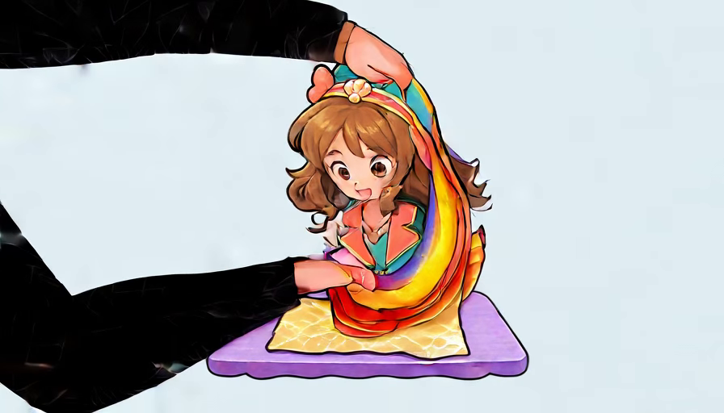
Frame 27 at 1.125s: Two unrelated black-sleeved hands grip the hat/body; Roshan and the gold sweet task remain distorted. No correct fold, owned contact or useful release. Complete native-canvas drafting opinion only; no runtime acceptance.
Frame 28 at 1.167s: Two unrelated black-sleeved hands grip the hat/body; Roshan and the gold sweet task remain distorted. No correct fold, owned contact or useful release. Complete native-canvas drafting opinion only; no runtime acceptance.
Frame 29 at 1.208s: Two unrelated black-sleeved hands grip the hat/body; Roshan and the gold sweet task remain distorted. No correct fold, owned contact or useful release. Complete native-canvas drafting opinion only; no runtime acceptance.
Frame 30 at 1.250s: Two unrelated black-sleeved hands grip the hat/body; Roshan and the gold sweet task remain distorted. No correct fold, owned contact or useful release. Complete native-canvas drafting opinion only; no runtime acceptance.
Frame 31 at 1.292s: Two unrelated black-sleeved hands grip the hat/body; Roshan and the gold sweet task remain distorted. No correct fold, owned contact or useful release. Complete native-canvas drafting opinion only; no runtime acceptance.
Frame 32 at 1.333s: Two unrelated black-sleeved hands grip the hat/body; Roshan and the gold sweet task remain distorted. No correct fold, owned contact or useful release. Complete native-canvas drafting opinion only; no runtime acceptance.
Frame 33 at 1.375s: Two unrelated black-sleeved hands grip the hat/body; Roshan and the gold sweet task remain distorted. No correct fold, owned contact or useful release. Complete native-canvas drafting opinion only; no runtime acceptance.
Frame 34 at 1.417s: Two unrelated black-sleeved hands grip the hat/body; Roshan and the gold sweet task remain distorted. No correct fold, owned contact or useful release. Complete native-canvas drafting opinion only; no runtime acceptance.
Frame 35 at 1.458s: Two unrelated black-sleeved hands grip the hat/body; Roshan and the gold sweet task remain distorted. No correct fold, owned contact or useful release. Complete native-canvas drafting opinion only; no runtime acceptance.
Frame 36 at 1.500s: Two unrelated black-sleeved hands grip the hat/body; Roshan and the gold sweet task remain distorted. No correct fold, owned contact or useful release. Complete native-canvas drafting opinion only; no runtime acceptance.
Frame 37 at 1.542s: Two unrelated black-sleeved hands grip the hat/body; Roshan and the gold sweet task remain distorted. No correct fold, owned contact or useful release. Complete native-canvas drafting opinion only; no runtime acceptance.
Frame 38 at 1.583s: Two unrelated black-sleeved hands grip the hat/body; Roshan and the gold sweet task remain distorted. No correct fold, owned contact or useful release. Complete native-canvas drafting opinion only; no runtime acceptance.
Frame 39 at 1.625s: Two unrelated black-sleeved hands grip the hat/body; Roshan and the gold sweet task remain distorted. No correct fold, owned contact or useful release. Complete native-canvas drafting opinion only; no runtime acceptance.
Frame 40 at 1.667s: Two unrelated black-sleeved hands grip the hat/body; Roshan and the gold sweet task remain distorted. No correct fold, owned contact or useful release. Complete native-canvas drafting opinion only; no runtime acceptance.
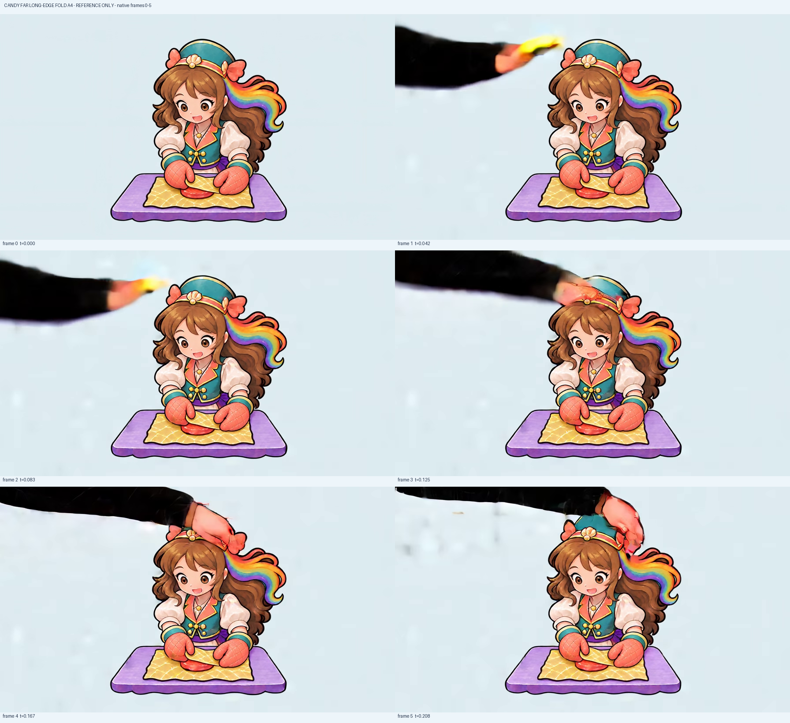
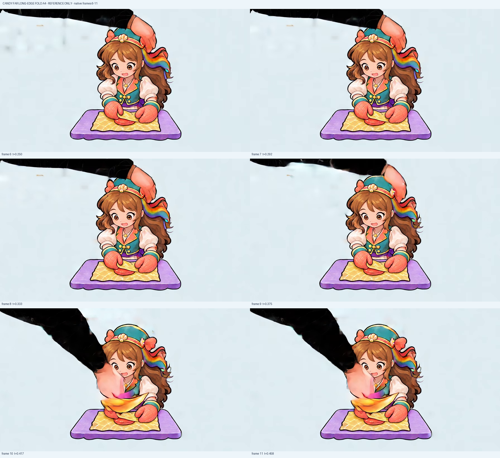
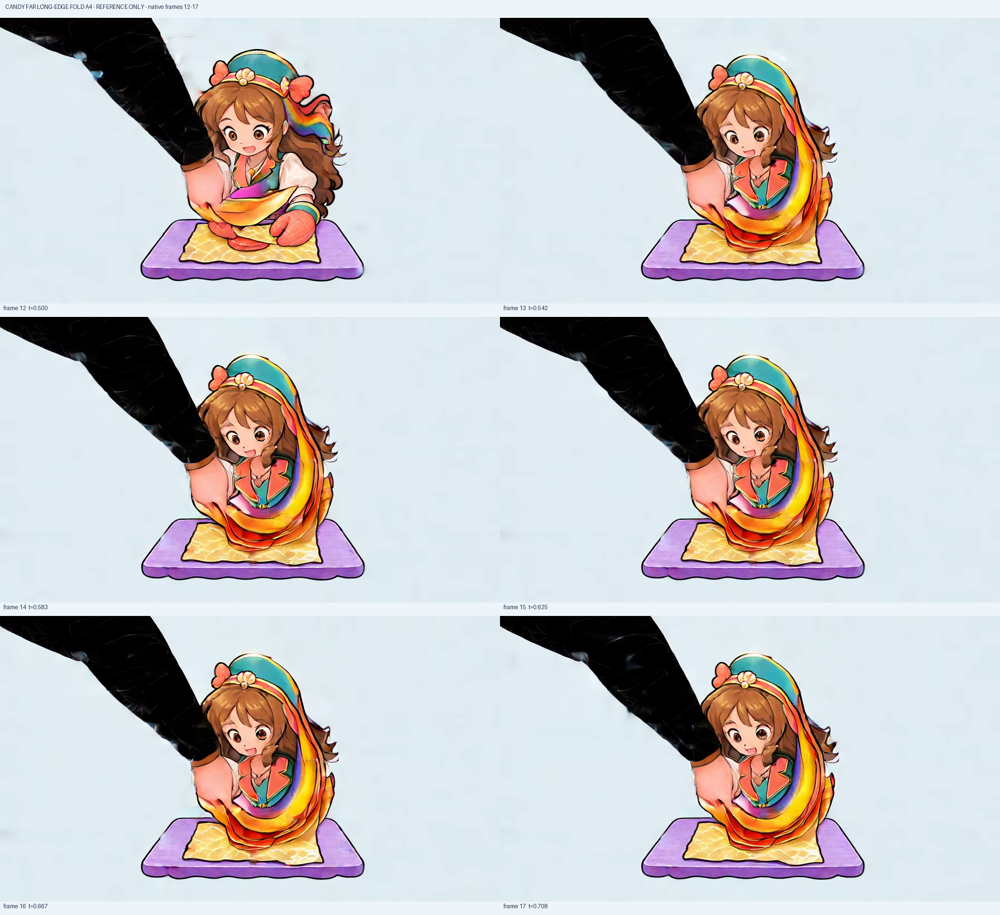
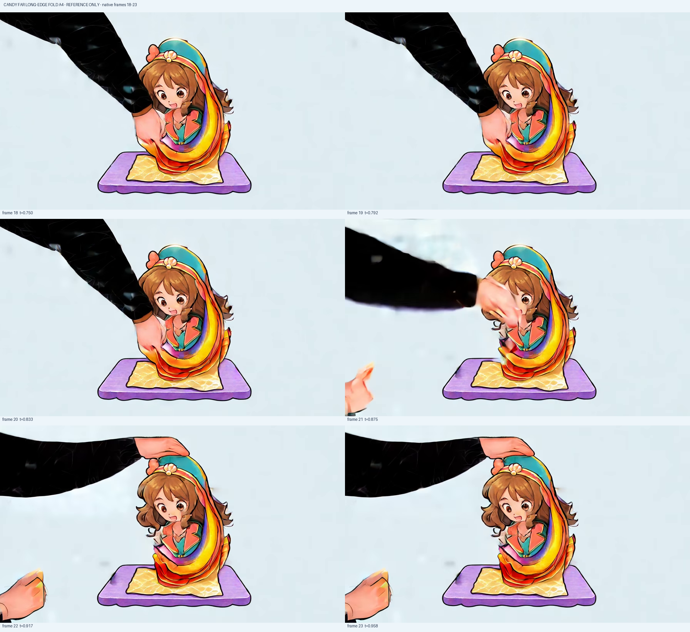
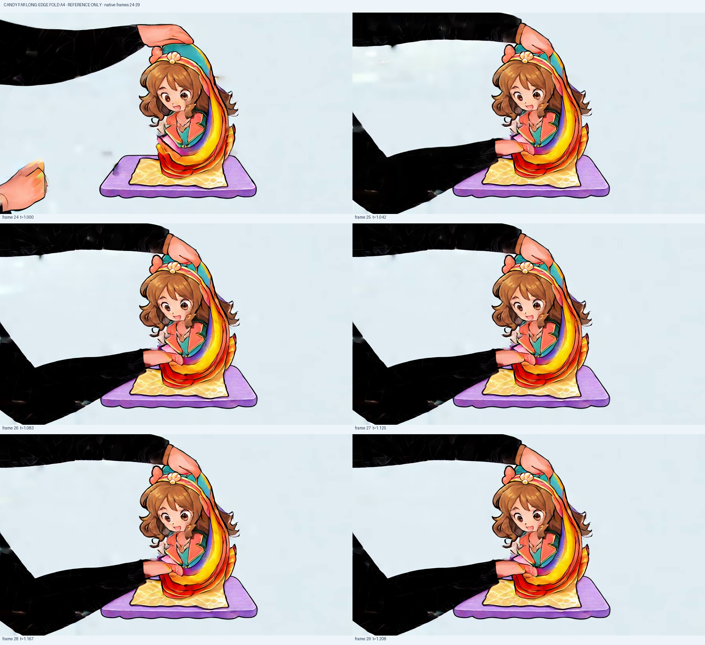
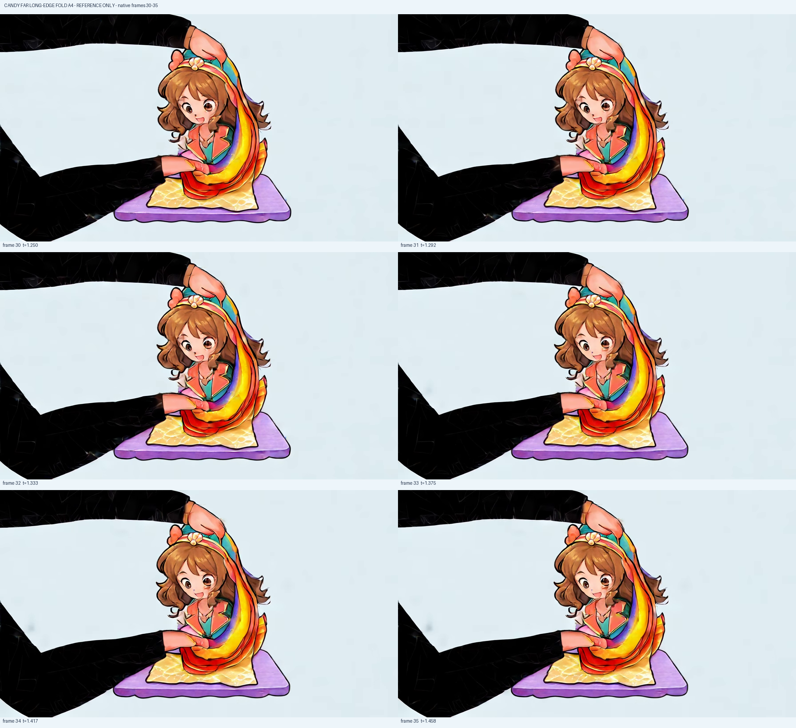
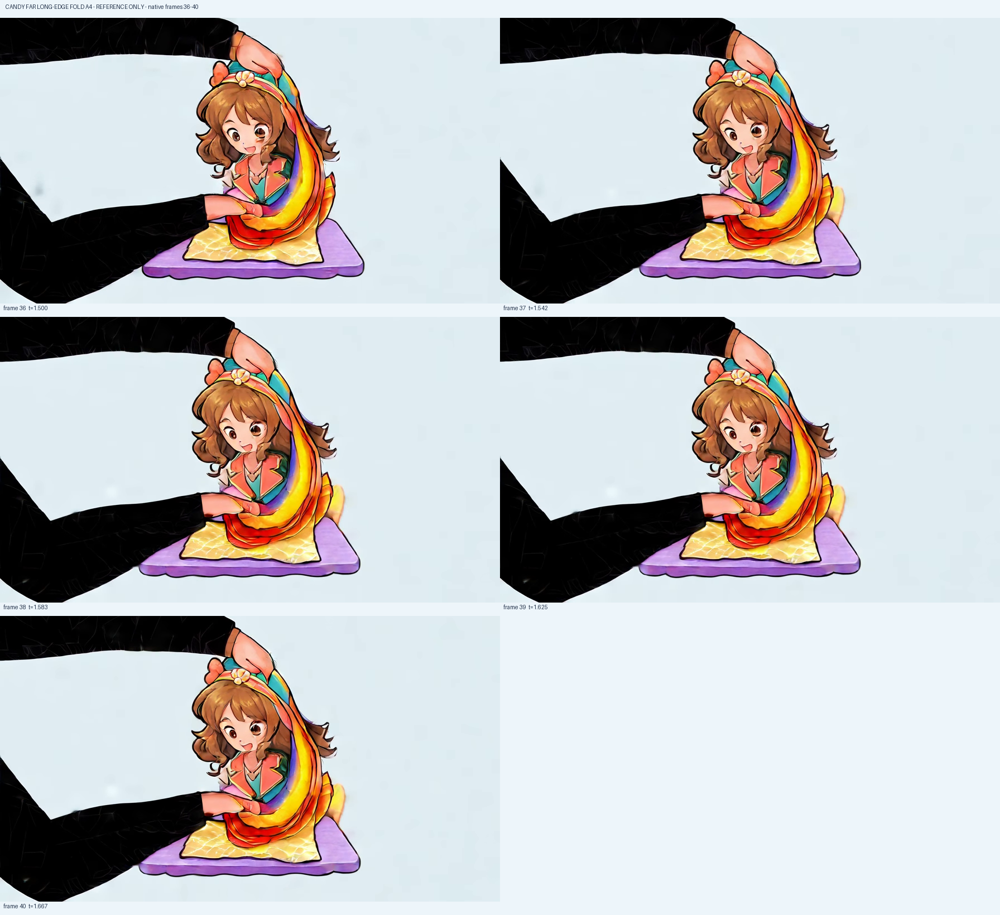
All frame/component scores · Native render receipt · Bound prompt/input/workflow
Preserved archive helper failure · Complete native recovery without rerender · Exact current source boundary